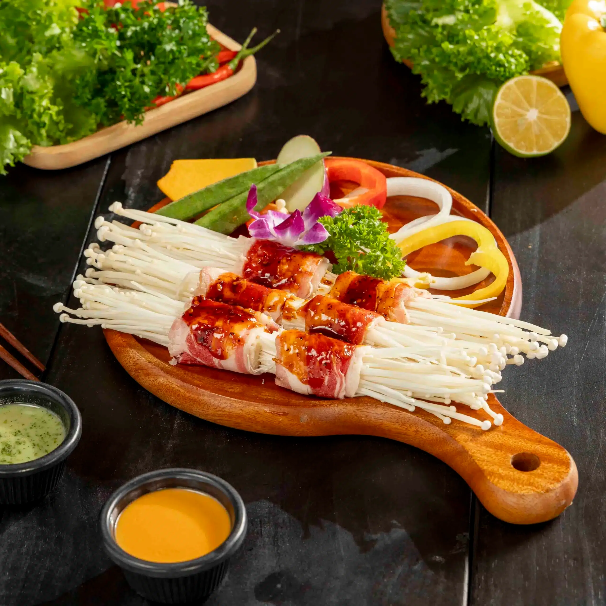
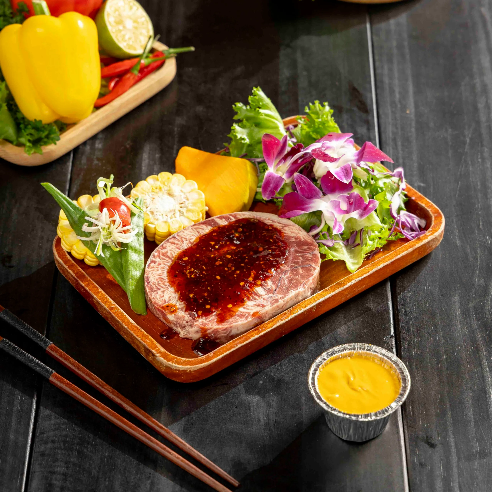

Trải nghiệm Đà Lạt trọn vẹn tại Tiệm Nướng & Chill Xóm Lèo – Không gian ẩm thực & chill tuyệt vời

Mục lục bài viết
- 1. Trải nghiệm Đà Lạt – Thành Phố mộng mơ với thiên nhiên và ẩm thực độc đáo
- 2. Điểm đến dành cho những tâm hồn lãng mạn yêu thích trải nghiệm Đà Lạt
- 3. Địa điểm ăn uống khi trải nghiệm Đà Lạt không thể bỏ lỡ
- 4. Lý do vì sao Tiệm Nướng & Chill Xóm Lèo là nơi khi trải nghiệm Đà Lạt nên đến
- 5. Sống ảo "triệu like" tại tiệm nướng chill nhất khi trải nghiệm Đà Lạt
- 6. Lịch trình gợi ý cho hành trình trải nghiệm Đà Lạt trong 1 ngày
- 7. Khách hàng nói gì về Tiệm Nướng & Chill Xóm Lèo khi trải nghiệm Đà Lạt?
Nằm trên cao nguyên Lâm Viên của tỉnh Lâm Đồng, Đà Lạt từ lâu đã trở thành điểm đến lý tưởng dành cho những tâm hồn yêu thiên nhiên và sự lãng mạn. Với khí hậu mát mẻ quanh năm, rừng thông bạt ngàn, những con dốc uốn lượn và màn sương mờ ảo vào mỗi sớm mai, thành phố này mang đến cảm giác yên bình khó nơi nào sánh được.

Không chỉ có cảnh đẹp nên thơ, trải nghiệm Đà Lạt còn là hành trình khám phá nét văn hóa đặc sắc, ẩm thực địa phương phong phú và những khoảnh khắc thư giãn hiếm có. Từ việc lang thang ở chợ đêm, check-in tại các quán cà phê view núi, đến tận hưởng không gian tĩnh lặng của những đồi chè và hồ nước – mỗi giây phút ở Đà Lạt đều để lại dấu ấn khó quên.
1. Trải nghiệm Đà Lạt – Thành Phố mộng mơ với thiên nhiên và ẩm thực độc đáo
Nhắc đến trải nghiệm Đà Lạt, không thể không nhắc đến khung cảnh thơ mộng, khí hậu se lạnh quanh năm và những con dốc huyền thoại ẩn hiện trong sương sớm. Nhưng Đà Lạt còn chinh phục du khách bằng một điểm mạnh rất riêng: ẩm thực Đà Lạt – phong phú, độc đáo và mang đậm hương vị địa phương.

Từ bánh tráng nướng, sữa đậu nành nóng cho đến các món nướng, lẩu cay nồng,… mọi món ăn nơi đây đều mang lại cảm giác thân quen nhưng mới mẻ. Đặc biệt, nếu bạn đang tìm kiếm một địa điểm vừa có đồ ăn ngon vừa có không gian chill đúng nghĩa, Tiệm Nướng & Chill Xóm Lèo chính là điểm đến lý tưởng trong hành trình du lịch Đà Lạt.

2. Điểm đến dành cho những tâm hồn lãng mạn yêu thích trải nghiệm Đà Lạt
Nếu bạn là người yêu thiên nhiên, đắm say với sự nhẹ nhàng, trầm lắng và một chút lãng mạn, thì trải nghiệm Đà Lạt chắc chắn sẽ khiến trái tim bạn rung động. Thành phố trên cao nguyên này không chỉ nổi tiếng với khí hậu se lạnh, sương mù mờ ảo và hàng thông vi vu mà còn là nơi ghi dấu biết bao ký ức tình yêu, tuổi trẻ và những khoảnh khắc đáng nhớ.
Đà Lạt luôn nằm trong top đầu các điểm đến mộng mơ nhất Việt Nam. Những địa danh nổi tiếng như:
-
Hồ Xuân Hương – Được mệnh danh là trái tim của Đà Lạt, nơi lý tưởng để dạo bộ, đạp vịt hoặc ngồi xe ngựa ngắm cảnh. Mặt hồ phẳng lặng, bao quanh là hàng thông xanh tạo nên không gian lãng mạn, yên bình – rất phù hợp cho những ai muốn tận hưởng khoảnh khắc thư giãn giữa thiên nhiên.

-
Thung Lũng Tình Yêu – Một biểu tượng của Đà Lạt dành cho các cặp đôi. Khung cảnh thơ mộng, hoa cỏ bốn mùa khoe sắc cùng các tiểu cảnh tình yêu được chăm chút kỹ lưỡng, tạo nên không gian lý tưởng để chụp ảnh và lưu giữ kỷ niệm ngọt ngào.

-
Đồi chè Cầu Đất – Cách trung tâm khoảng 20km, nơi đây nổi bật với những luống chè xanh mướt trải dài bất tận. Buổi sáng, khi sương còn giăng nhẹ, bạn sẽ có cảm giác như lạc vào một thung lũng trong mơ – vừa yên tĩnh vừa lãng mạn.

-
Thiền Viện Trúc Lâm – Nằm giữa rừng thông xanh, thiền viện mang đến cảm giác tĩnh lặng, an nhiên. Từ đây, bạn có thể phóng tầm mắt ra hồ Tuyền Lâm – một bức tranh thủy mặc hữu tình. Đây là điểm dừng chân lý tưởng để tìm lại sự cân bằng cho tâm hồn.

-
Nhà ga Đà Lạt cổ kính – Với kiến trúc Pháp đặc trưng và tuyến tàu cổ Trại Mát, ga Đà Lạt là điểm check-in không thể bỏ qua. Vẻ đẹp hoài cổ cùng không gian yên bình nơi đây khiến mỗi bức ảnh đều như mang một câu chuyện riêng.

Không chỉ có cảnh đẹp, Đà Lạt còn khiến người ta yêu say đắm bởi chính không khí trong lành, yên bình và lối sống chậm rãi – khác hẳn nhịp sống vội vã nơi phố thị.
Với những ai thích lãng mạn, còn gì tuyệt hơn khi tay trong tay cùng người thương dạo bước bên sườn dốc, nghe tiếng gió vi vu giữa rừng thông hay nhâm nhi ly cà phê nóng giữa cái lạnh tê tê đầu ngón tay?
Và khi chiều buông – cũng là lúc Đà Lạt khoác lên mình tấm áo vàng nhẹ của nắng hoàng hôn – thì một điểm dừng chân lý tưởng không thể bỏ qua chính là Tiệm Nướng & Chill Xóm Lèo. Đây không chỉ là một quán chill Đà Lạt đúng nghĩa, mà còn là nơi lý tưởng để bạn vừa thưởng thức những món nướng thơm lừng, vừa đắm mình trong không gian thiên nhiên mở, ngập tràn cảm xúc.
Không khí se lạnh, mùi khói nướng quyện vào hương thông thoảng qua, một chút đồ uống ấm nóng và ánh đèn vàng dịu nhẹ – tất cả tạo nên một khung cảnh hoàn hảo để kết thúc một ngày khám phá và bắt đầu một buổi tối lãng mạn.
3. Địa điểm ăn uống khi trải nghiệm Đà Lạt không thể bỏ lỡ
 Ảnh: Tiệm nướng & Chill Xóm Lèo
Ảnh: Tiệm nướng & Chill Xóm Lèo
📍 Địa chỉ: 113 Huỳnh Tấn Phát, Phường Xuân Trường, Đà Lạt, Lâm Đồng
📍 Hotline: 076.45.27.336 – 08.99.42.84.34 – 0902.91.22.40
📍 Google Maps: Xem hướng dẫn đường đi
📍 Inbox đặt bàn: Tại đây
Trong danh sách các địa điểm ăn uống ở Đà Lạt, Tiệm Nướng & Chill Xóm Lèo nổi bật với không gian mở, thiết kế thân thiện với thiên nhiên và phong cách phục vụ thân thiện. Đây là quán nướng Đà Lạt cực kỳ được yêu thích bởi người địa phương và du khách.
4. Lý do vì sao Tiệm Nướng & Chill Xóm Lèo là nơi khi trải nghiệm Đà Lạt nên đến
4.1 Không gian chill chuẩn gu giới trẻ cho một trải nghiệm Đà Lạt tuyệt vời
Không giống như những quán ăn thông thường, Xóm Lèo tạo cảm giác thân mật như đang "cắm trại" giữa rừng thông. Với bàn gỗ, lều trại, đèn vàng ấm áp và tiếng nhạc nhẹ nhàng – nơi đây cực kỳ thích hợp để:
-
Tổ chức tiệc BBQ ngoài trời
-
Tụ họp bạn bè, gia đình
-
Hẹn hò lãng mạn dưới ánh hoàng hôn

4.2 Ẩm thực Đà Lạt qua từng món nướng hấp dẫn khi trải nghiệm Đà Lạt
Thực đơn của Tiệm Nướng & Chill Xóm Lèo rất đa dạng, phù hợp cho mọi khẩu vị:
-
Ba chỉ bò cuộn kim châm

-
Bò tảng nướng phô mai trứng muối

- Ba chỉ bò nướng muối tiêu

Tất cả món ăn đều được tẩm ướp chuẩn vị, nướng tại bàn và nóng hổi khi thưởng thức.
4.3. Đặc biệt là trải nghiệm săn tàu lửa Tại Tiệm Nướng & Chill Xóm Lèo khi trải nghiệm Đà Lạt
Một trong những trải nghiệm "độc nhất vô nhị" khi ghé thăm Tiệm Nướng & Chill Xóm Lèo mà ít ai ngờ tới, chính là… săn khoảnh khắc đoàn tàu lửa đi ngang ngay cạnh quán!
Nằm sát bên tuyến đường sắt Đà Lạt – Trại Mát, Tiệm Nướng & Chill Xóm Lèo sở hữu vị trí vô cùng độc đáo: vừa thưởng thức món nướng thơm lừng, vừa có thể tận mắt chứng kiến đoàn tàu cổ lướt qua trong tiếng còi vang vọng giữa núi rừng – một khung cảnh đầy cảm xúc, gợi nhớ về miền ký ức xưa cũ.

Tàu thường chạy vào các khung giờ nhất định trong ngày, và nếu đến đúng lúc, bạn sẽ có cơ hội "săn tàu lửa" – nghĩa là chụp những bức ảnh hiếm hoi khi tàu đi ngang, khói bay nghi ngút trong khung cảnh chill mờ sương. Đây là trải nghiệm cực kỳ "đắt giá" mà nhiều bạn trẻ săn lùng khi trải nghiệm Đà Lạt, đặc biệt là những tín đồ mê nhiếp ảnh hoặc muốn lưu giữ một khoảnh khắc thật riêng giữa vùng đất mộng mơ.
Không gian tại Xóm Lèo khi tàu chạy ngang như một bộ phim hoài cổ: ánh đèn vàng dịu, tiếng tàu vọng lại xa dần, mùi thịt nướng lan tỏa trong không khí se lạnh. Tất cả tạo nên một buổi tối đậm chất "chill Đà Lạt" không thể tìm thấy ở nơi nào khác.
📝 Gợi ý nhỏ: Tàu sẽ chạy nhiều chuyến từ 16h30 đến 21h25. Và đừng quên sạc đầy pin điện thoại hoặc mang theo máy ảnh để bắt trọn khoảnh khắc đặc biệt này nhé!
5. Sống ảo "triệu like" tại tiệm nướng chill nhất khi trải nghiệm Đà Lạt
Mỗi góc nhỏ tại Xóm Lèo đều là background hoàn hảo để chụp ảnh. Từ khu vực lều trại, bàn ăn ngoài trời, ánh đèn lung linh, đến khung cảnh núi rừng sau lưng quán, tất cả tạo nên bức tranh hoàn hảo cho dân yêu sống ảo.
Đây là quán chill Đà Lạt cực kỳ lý tưởng nếu bạn muốn có bộ ảnh check-in phong cách boho, rustic hoặc nature-friendly.

6. Lịch trình gợi ý cho hành trình trải nghiệm Đà Lạt trong 1 ngày
🕘 Buổi Sáng:
-
Ăn sáng tại bánh mì xíu mại Hoàng Diệu
-
Dạo chơi quanh Hồ Tuyền Lâm, chụp ảnh tại Dinh 1 Bảo Đại
- Check-in tại Đồi chè Cầu Đất
 Ảnh: Trải Nghiệm Đà Lạt
Ảnh: Trải Nghiệm Đà Lạt
🕛 Buổi Trưa:
-
Ghé quán ăn địa phương thưởng thức.
-
Về lại trung tâm để nghỉ trưa, uống nước, thư giãn

🕒 Buổi Chiều:
-
Tham quan nhà ga Đà Lạt cổ kính
-
Uống cà phê tại quán có view đồi như Horizon Coffee hoặc Yooberi

🌙 Buổi Tối:
-
Tản bộ chợ đêm Đà Lạt, mua quà lưu niệm, ăn vặt
-
Kết thúc ngày bằng bữa tối BBQ tại Tiệm Nướng & Chill Xóm Lèo trong không gian lãng mạn, ấm áp

7. Khách hàng nói gì về Tiệm Nướng & Chill Xóm Lèo khi trải nghiệm Đà Lạt?
"Nhân viên dễ thương cực, ngắm được tàu nữa thì quá tuyệt, đồ ăn trọn vị." – Thùy Nguyễn
"Món ăn ngon, vừa miệng, view chill, nhân viên hơi bị dễ thương nha" – Bích Phan
"Phục vụ tốt, quán đông nhưng xếp bàn nhanh cho khách. Đồ ăn ngon" – Nguyễn Ánh Trà
"Không gian thoáng, món ăn ngon, phục vụ nhiệt tình. Chỉ tiếc chưa được coi view tàu chạy." – Lục Nam Phạm Lương
Nếu bạn đang tìm một nơi để trải nghiệm Đà Lạt trọn vẹn, thì Tiệm Nướng & Chill Xóm Lèo chính là điểm đến không thể bỏ lỡ. Không chỉ là nơi ăn uống, đây còn là nơi để bạn cảm nhận không khí Đà Lạt đúng nghĩa – lạnh lạnh, thơm mùi khói nướng, và đầy ắp tiếng cười bạn bè.
👉 Hãy thêm ngay Tiệm Nướng & Chill Xóm Lèo vào checklist du lịch của bạn để không bỏ lỡ một trong những địa điểm ăn uống ở Đà Lạt được yêu thích nhất!